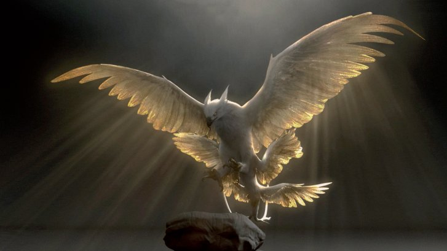

- The mascot for a house at Ilvermorny School of Witchcraft and Wizardry
- A great and magestic magical bird closely related to the phoenix
- Physical traits: eagle-like head, three pairs of wings, shining feathers decorated with cloud-like patterns
- Magical capability of creating storms
- Its tail feather could be used as a core in a powerful but tricky to master magic wand
- Ministry of Magic Classification: Beast XXXX
|
- Not mentioned in official books
- First appearance in Fantastic Beasts and Where to Find Them
|

|